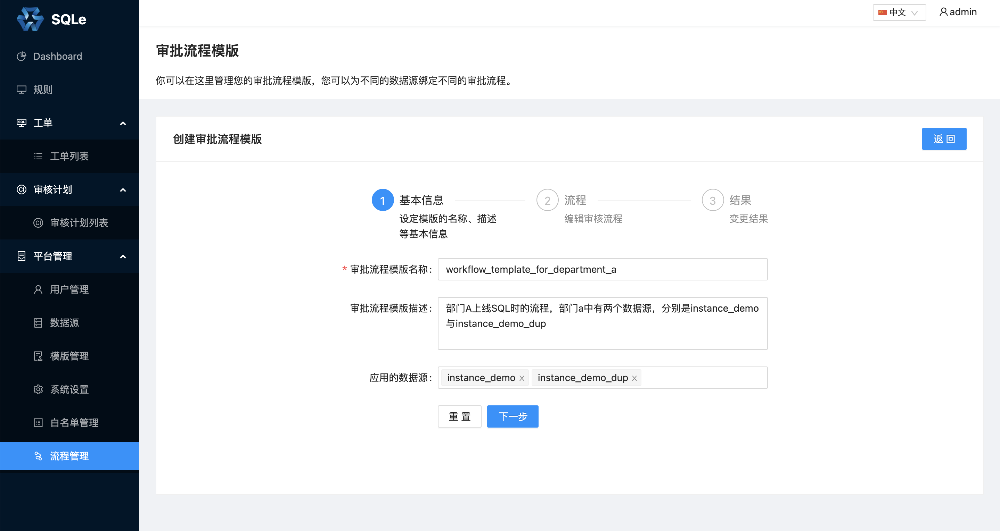
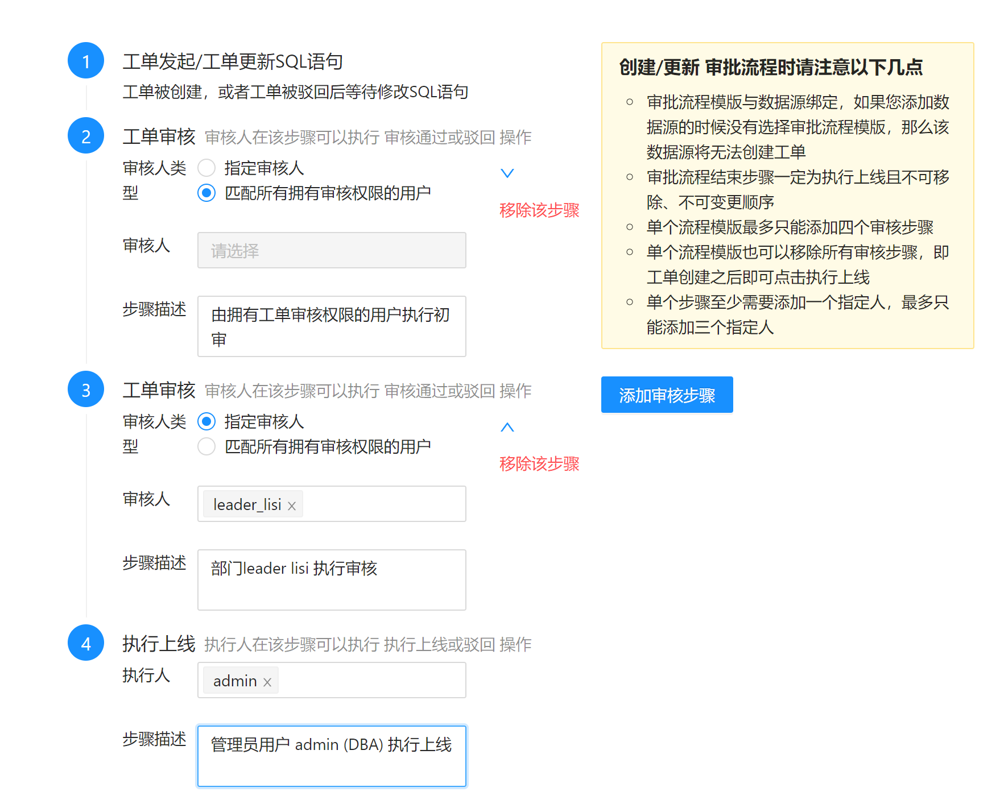

流程模板管理（企业版功能）
工作流要解决的主要问题是：为实现某个业务目标，在多个参与者之间按某种预定规则自动传递文档、信息或者任务。
SQLE 使用工作流来解决 SQL 上线的流程化问题。在 SQLE 中称为流程模板。
创建流程模板
在左侧导航栏的「平台管理」中的「流程管理」页面中，点击「创建流程模板」，填写流程模板相关信息。
步骤 1：

步骤 2：

在这一步中，添加了两个审核步骤：
- 工单创建后，流转到 DBA 初审
- DBA 初审后，流转到部门领导复审
最后，部门领导复审后，流转到 DBA 执行上线。